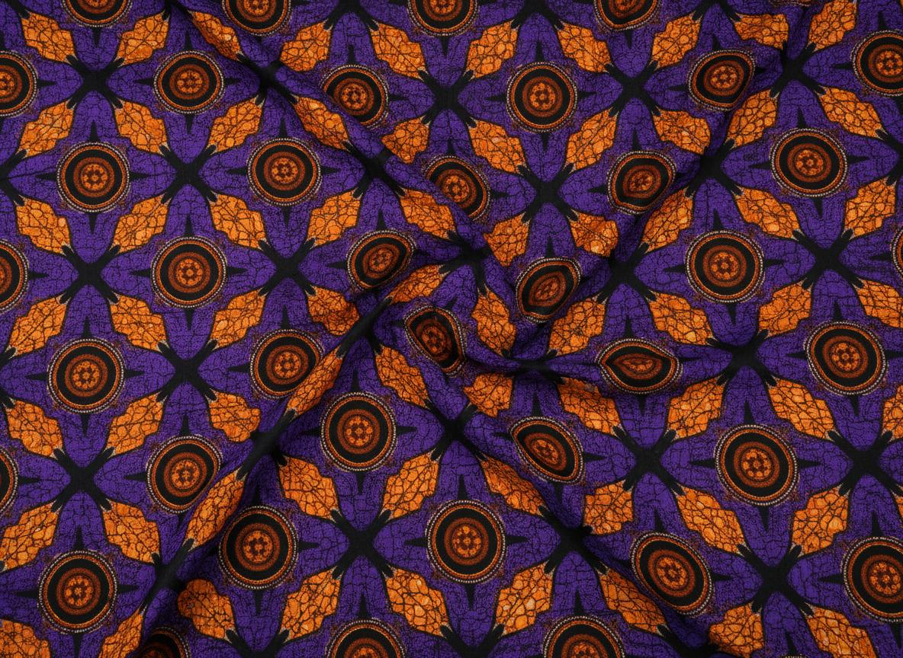
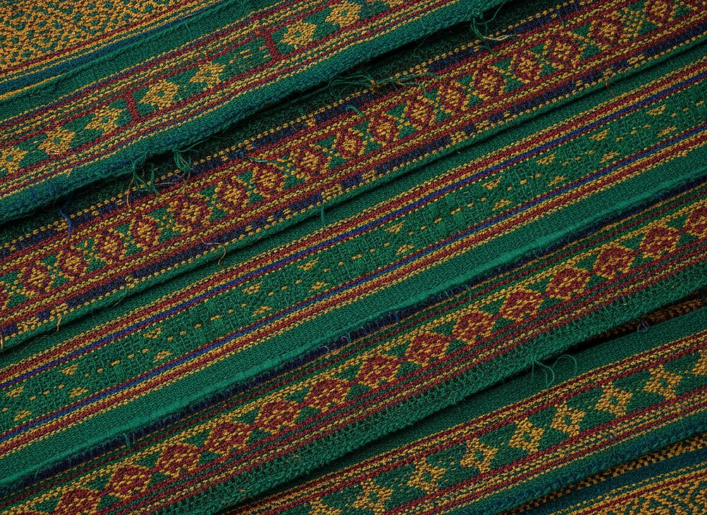
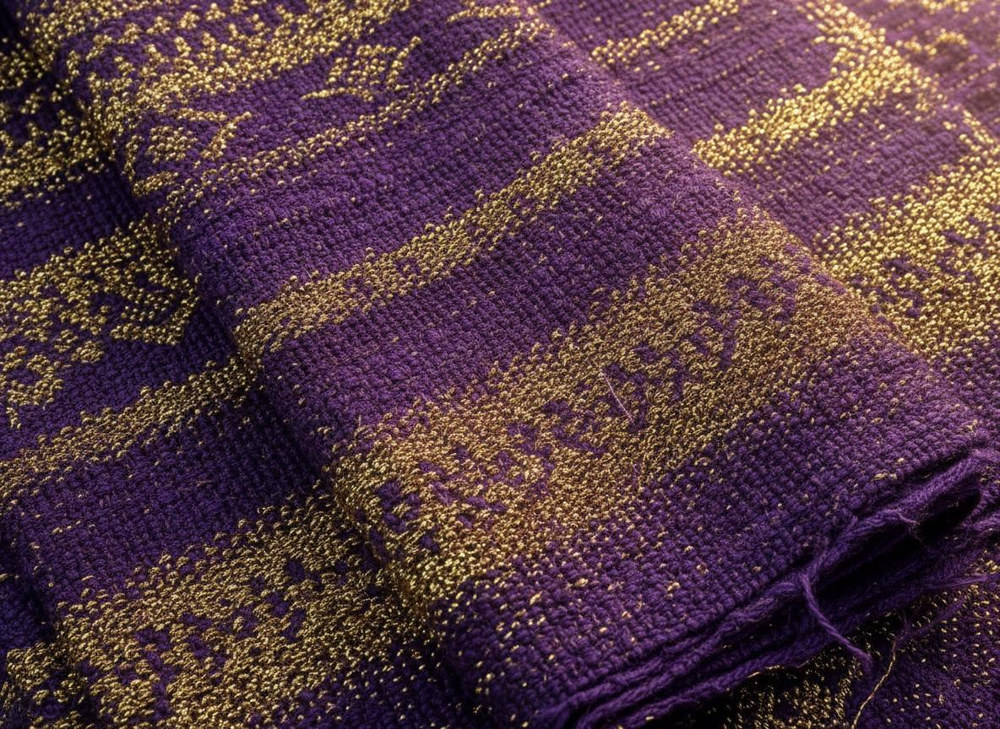
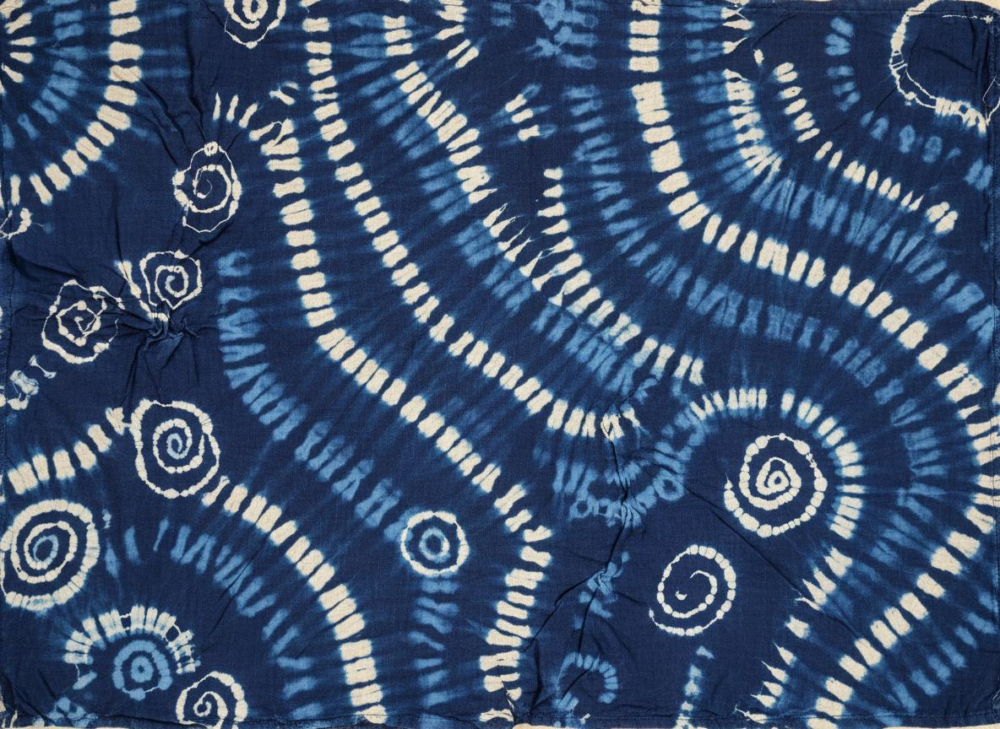
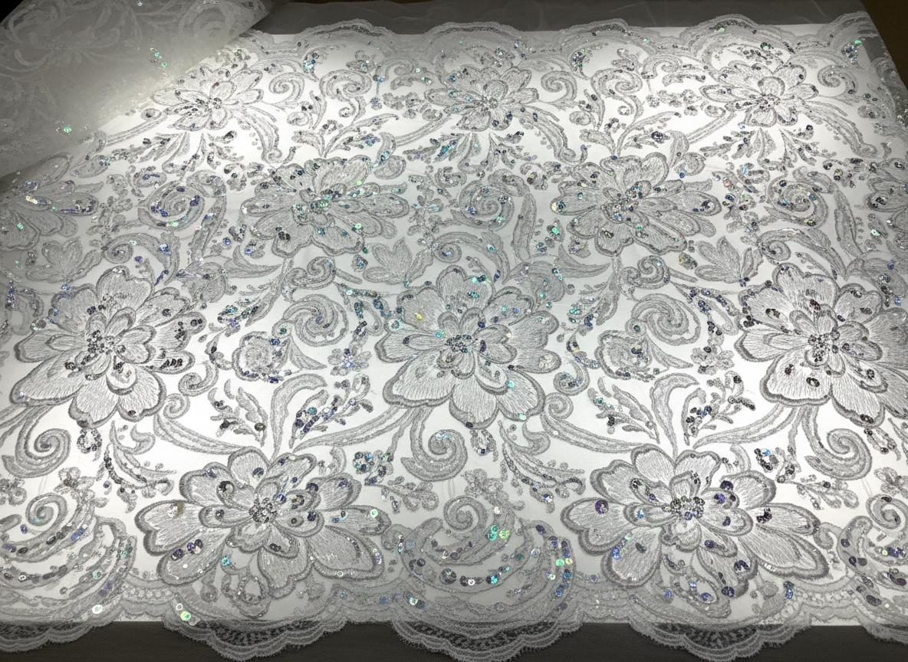
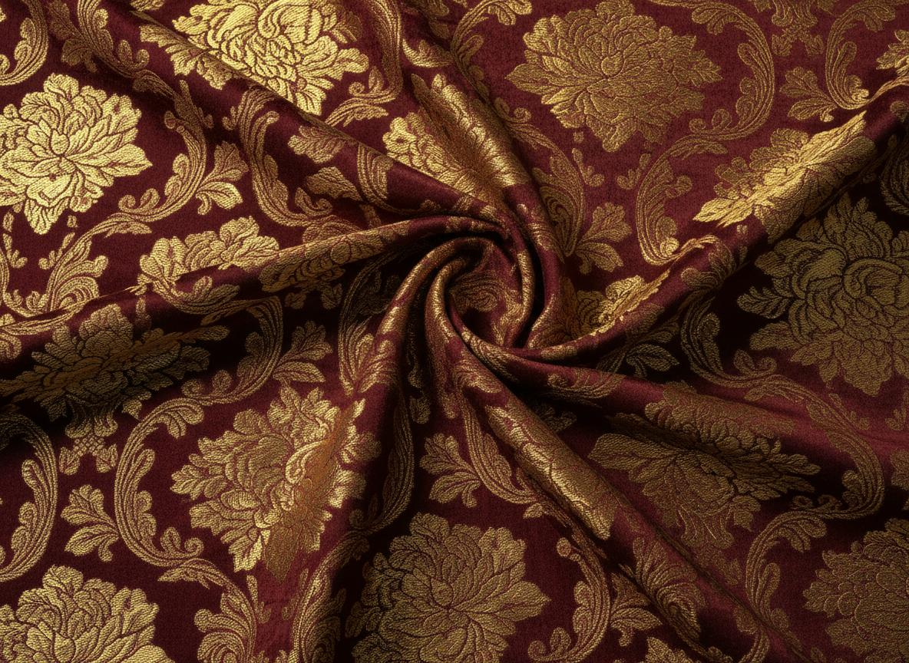
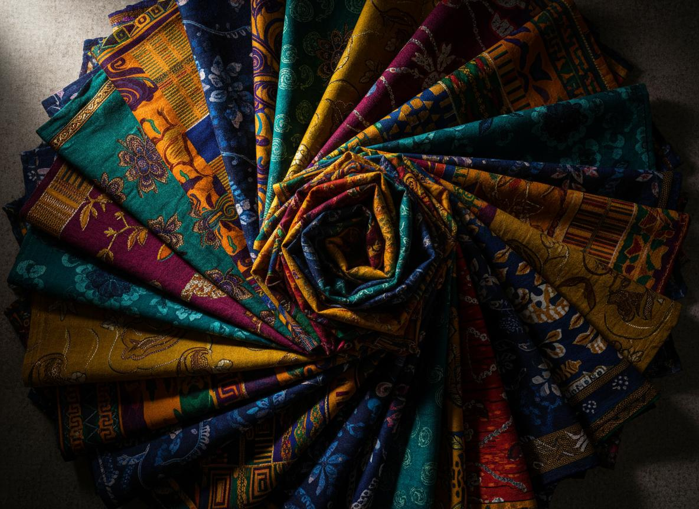

Fashionxpression
Explore our collection of authentic African textiles. Each fabric tells a story of heritage, craftsmanship, and cultural significance.

Vibrant wax-printed cotton fabric known for its bold geometric and floral patterns. Originally produced in the Netherlands and adapted into West African culture, Ankara has become a symbol of African fashion worldwide. The colors and patterns often carry specific meanings and are chosen to reflect the wearer's personality, status, or occasion. At Fashionxpression, we source premium-grade Ankara that maintains its vibrancy wash after wash.
Explore Collection
Handwoven silk and cotton strips featuring intricate geometric designs. Originating from the Akan people of Ghana, each Kente pattern carries its own name, meaning, and cultural significance. Traditionally worn by royalty during ceremonies, modern Kente has transcended borders to become a global symbol of African pride. Our master weavers create authentic Kente that honors centuries of tradition.
Explore Collection
Hand-loomed cloth traditionally woven by the Yoruba people of Nigeria. Rich in texture, often featuring metallic threads for ceremonial wear. Aso Oke is the fabric of celebration — weddings, chieftaincy ceremonies, and festivals. The weaving process can take days, with each thread carefully placed by skilled artisans. We work directly with weaving communities in Iseyin and Ilorin to bring you authentic Aso Oke.
Explore Collection
Indigo-dyed cloth created using resist-dyeing techniques. Each piece is unique, with patterns ranging from simple dots to complex motifs. The Adire tradition, centered in Abeokuta, represents one of Nigeria's most treasured textile arts. Using cassava paste or raffia stitches to create patterns, artisans produce one-of-a-kind fabrics that blur the line between craft and fine art.
Explore Collection
Delicate embroidered net fabric that has been adapted into African fashion. Often embellished with sequins and beads for special occasions, African lace has evolved into a distinct category of luxury textile. French and Swiss lace are particularly prized for weddings and high-profile events. We offer an extensive collection of authentic European and African-produced lace in various weights and patterns.
Explore Collection
Richly decorative shuttle-woven fabric with raised floral or geometric patterns. Woven with gold or silver threads for luxury appeal, brocade brings an unmistakable air of opulence to any garment. This fabric has traveled the world from China to Italy to Africa, each culture adding its own interpretation. Our brocade selection spans from subtle textures to bold statement pieces.
Explore CollectionLuxurious natural silk fabric, often printed with African-inspired motifs. Silk's natural sheen and fluid drape make it the perfect canvas for bold African designs. We combine traditional African print techniques with the finest silk to create pieces that honor both heritage and luxury. Ideal for evening wear, bridal pieces, and statement blouses.
Explore CollectionSoft, plush woven fabric with a dense pile. Deep jewel tones make it ideal for evening wear and royal attire. Velvet has been associated with luxury for centuries, and its rich texture translates beautifully into African fashion contexts. Our velvet collection features deep purples, emeralds, and royal blues that complement a wide range of skin tones.
Explore CollectionWe have access to an extensive network of fabric suppliers across Nigeria and West Africa. If you have a specific fabric in mind — whether it's a rare vintage Ankara print, a particular Kente pattern, or something entirely custom — let us source it for you.
Request Custom Fabric